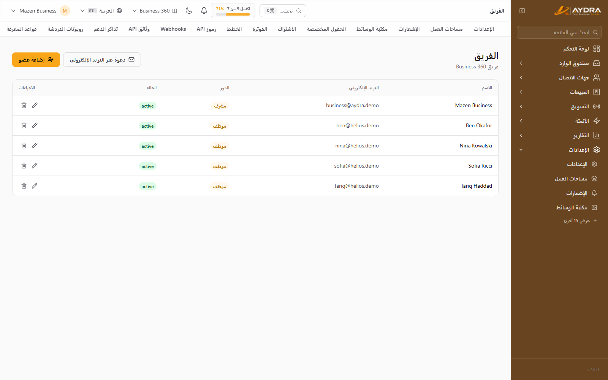
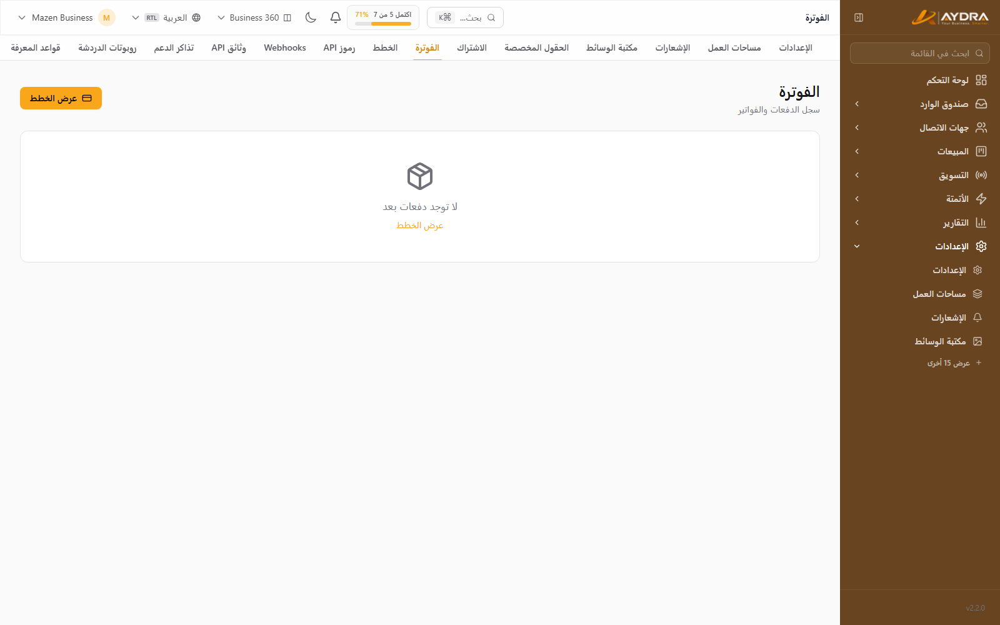
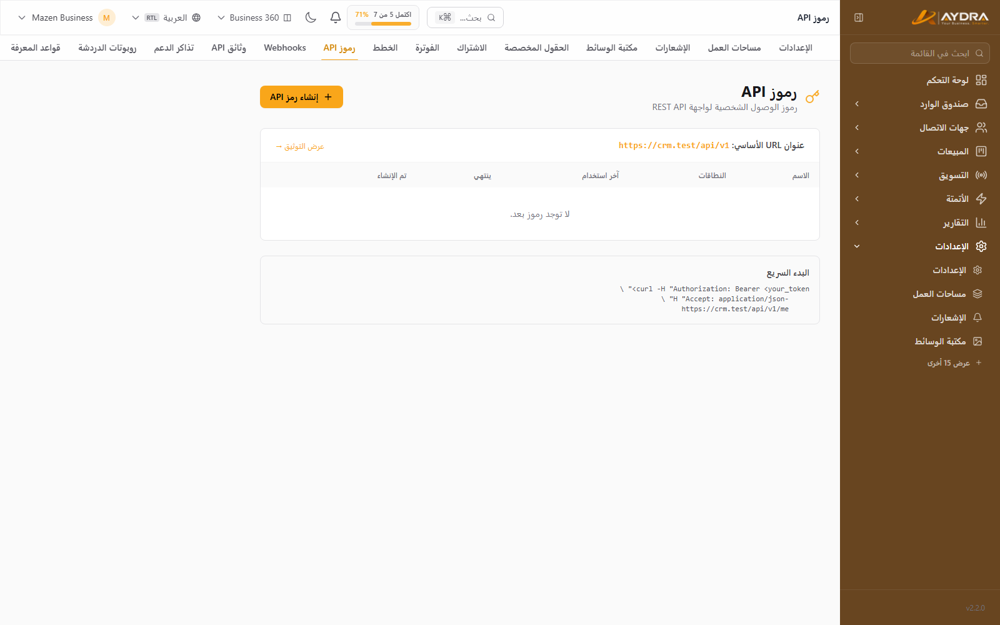
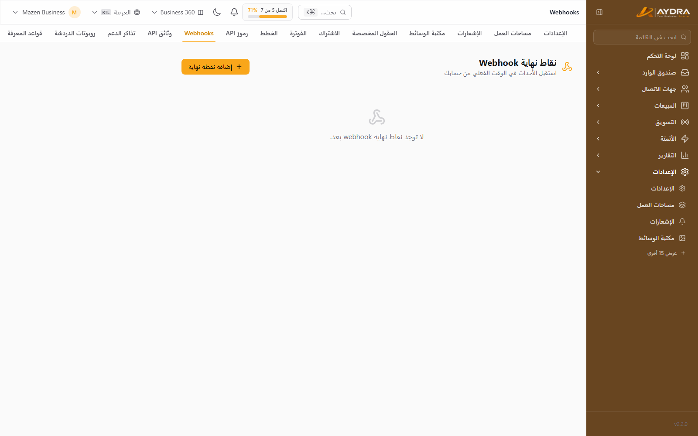
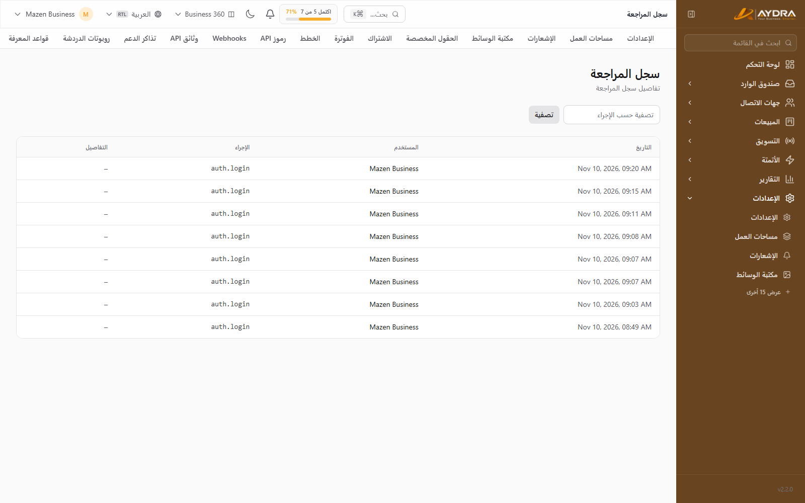

إدارة الحساب واستكشاف الأخطاء
هذا الدليل للمدير: من يدخل النظام وماذا يرى، كيف تُدار الفوترة، كيف تحمي الحساب، وأين تجد الحل عندما لا يعمل شيء.
معظم إعدادات هذا الدليل تظهر فقط لدور Administrator. لو كنت Staff أو Viewer ولم تجد الشاشة، فهذا هو السبب — اطلب من مدير الحساب.
1. الفريق والدعوات

من الإعدادات ← الفريق.
دعوة عضو جديد
- اضغط دعوة بالبريد.
- أدخل بريد العضو واختر الدور (Staff افتراضيًا).
- أرسل الدعوة. تظهر في قسم الدعوات المعلّقة حتى يقبلها العضو.
- يمكنك إلغاء الدعوة قبل قبولها.
الأدوار الثلاثة
| الدور | الصلاحيات | مناسب لـ |
|---|---|---|
| Administrator | كل شيء: الفريق، الفوترة، التكاملات، الإعدادات، السجلات، الحذف | مالك الحساب أو مدير التشغيل |
| Staff | العمل اليومي: المحادثات، جهات الاتصال، الليدز، الحملات | فريق المبيعات والدعم |
| Viewer | قراءة وتقارير فقط | إدارة أو متابعة بدون تعديل |
عدد المستخدمين محدود بالباقة. عند الوصول للحد، زر الدعوة يتوقف ويظهر اقتراح بالترقية — الأعضاء الحاليون يستمرون في العمل بلا تأثر.
قبل حذف عضو، انقل مهامه ومحادثاته غير المحلولة إلى زميل آخر. حذف العضو لا يحذف بياناته التاريخية لكنه يقطع وصوله فورًا.
2. الاشتراك والفوترة
صفحة الاشتراك

من الإعدادات ← الاشتراك ترى: الباقة الحالية، تاريخ التجديد، حالة الاشتراك، والحدود. من نفس الصفحة:
- تغيير الباقة: ترقية فورية أو تخفيض يبدأ من الدورة التالية عادةً.
- إلغاء الاشتراك: يظل الحساب يعمل حتى نهاية الفترة المدفوعة ثم يتحول إلى وضع محدود.
- كوبون خصم: أدخل الكود قبل الدفع ثم اضغط تحقّق — يظهر الخصم قبل التأكيد.
سجل المدفوعات والفواتير
من الإعدادات ← الفوترة. جدول بكل العمليات: التاريخ، المبلغ، العملة، البوابة، والحالة.
- اضغط الفاتورة بجانب أي عملية ناجحة لتحميلها.
- العمليات بحالة Pending قد تكتمل بعد دقائق حسب بوابة الدفع.
- لو فشل الدفع، جرّب بوابة أخرى أو راجع البنك — لا تُكرّر المحاولة أكثر من مرتين متتاليتين.
الأسعار والعملات
الأسعار تُعرض حسب عملة الحساب/المنطقة. القيم المعروضة لا تشمل الضريبة (VAT) وتُضاف عند الدفع حسب بلدك. الاشتراك السنوي = قيمة 10 أشهر (شهران مجانًا).
3. الملف الشخصي والأمان
الملف الشخصي
من الملف الشخصي: الاسم، البريد، الصورة، اللغة، والمنطقة الزمنية. تغيير البريد يحتاج تأكيدًا.
المصادقة الثنائية (2FA)
- افتح الملف الشخصي ← Two-Factor.
- امسح رمز QR بتطبيق مصادقة (Google Authenticator / Authy / 1Password).
- أدخل الرمز لتأكيد التفعيل.
- احفظ أكواد الاسترداد في مكان آمن — بدونها يصعب الدخول عند فقدان الهاتف.
الجلسات النشطة
من الملف الشخصي ← الجلسات ترى كل الأجهزة المسجّلة. استخدم تسجيل الخروج من كل الجلسات عند الاشتباه في وصول غير مصرّح به.
كلمة المرور
غيّرها من الملف الشخصي. استخدم كلمة طويلة وفريدة، وفعّل 2FA — هما أهم خطوتين لحماية الحساب.
4. الـAPI والـWebhooks
مفاتيح API (API Tokens)

من الإعدادات ← مفاتيح API (تحتاج ميزة API في الباقة).
- اضغط إنشاء مفتاح وأدخل اسمًا يدل على استخدامه (مثل «تكامل الموقع»).
- اختر الصلاحيات (Scopes): قراءة/كتابة جهات الاتصال، الحملات، الرسائل، المحادثات، Webhooks، AI، الأتمتة، السوشيال.
- حدّد تاريخ انتهاء اختياريًا.
- انسخ المفتاح فورًا — لن يُعرض مرة أخرى.
استخدمه في الطلبات كـ Authorization: Bearer <token>. راجع الإعدادات ← توثيق API للأمثلة والمسارات.
لا تضع المفتاح في كود الواجهة أو مستودع Git. أنشئ مفتاحًا منفصلًا لكل تكامل، وأبطله فورًا عند تسريبه أو انتهاء استخدامه.
Webhooks الصادرة

من الإعدادات ← Webhooks. تُبلّغ أنظمتك بأحداث المنصة.
- أضف Endpoint (HTTPS) واختر الأحداث.
- احفظ الـSecret للتحقق من التوقيع.
- أرسل اختبارًا وتأكد من استلام
200. - راجع سجل التسليمات عند أي فشل، وأعد المحاولة.
يمكن تدوير الـSecret من نفس الصفحة إن شككت في تسريبه.
5. الوسائط والتخزين
من الإعدادات ← مكتبة الوسائط. ارفع الصور والملفات المستخدمة في الحملات والقوالب والمنشورات.
- الحد الأقصى لحجم الملف يعتمد على الباقة وسعة التخزين.
- الصور الكبيرة تُضغط تلقائيًا في بعض المسارات — راجع المعاينة بعد الرفع.
- حذف ملف مستخدم في حملة قد يكسر الحملة — تحقق قبل الحذف.
عند امتلاء التخزين، الرفع الجديد يتوقف فقط؛ الملفات الحالية تعمل. نظّف الملفات غير المستخدمة أو رقّي الباقة.
6. الإشعارات
من الإعدادات ← الإشعارات:
- اختر ما يصلك: محادثة جديدة، إسناد، مهمة مستحقة، فشل حملة، فشل أتمتة، فاتورة…
- اختر القناة: داخل التطبيق، بريد، أو Web Push.
- Web Push يحتاج السماح من المتصفح — لو رفضته، أعد التفعيل من إعدادات الموقع في المتصفح.
- نغمات التنبيه تُضبط من صندوق الوارد.
7. سجل التدقيق (Audit Log)

من الإعدادات ← سجل التدقيق (للمدير فقط). يعرض من فعل ماذا ومتى: تسجيل دخول، تعديل إعدادات، حذف، دعوة، تغيير باقة… إلخ.
- فلتر حسب الإجراء أو المستخدم.
- صدّر السجل CSV من زر التصدير.
- استخدمه عند التحقيق في تغيير غير متوقع أو حادث أمني.
8. الخصوصية وGDPR
من الإعدادات ← الخصوصية وGDPR (للمدير فقط):
اتفاقية معالجة البيانات (DPA)
حمّل نسخة DPA مُعبّأة ببيانات مؤسستك — للنظام والعميل.
حق المحو (Erasure)
- أنشئ طلب محو لبريد شخص معيّن.
- الطلب يمر بفترة سماح (30 يومًا افتراضيًا) قبل التنفيذ.
- يمكن إلغاء الطلب خلال الفترة.
- عند التنفيذ: تُحذف المحادثات وجهات الاتصال، وتُجهَّل (Anonymise) الليدز للحفاظ على السجلات المالية.
مدة الاحتفاظ
حدّد عدد الأيام لحفظ أرشيفات التصدير المُنشأة. القيمة 0 = الاحتفاظ بلا حد. احذف الأرشيفات القديمة تلقائيًا لتوفير المساحة.
9. تصدير بيانات المساحة
من الإعدادات ← تصدير البيانات: اطلب نسخة كاملة من بيانات مساحة العمل. يُنشأ الملف في الخلفية ويصلك رابط التحميل بالبريد عند انتهائه. الفترة تعتمد على حجم البيانات.
10. الدعم
من الدعم في القائمة الجانبية:
- اضغط تذكرة جديدة.
- اختر الموضوع (فوترة، تكامل، خطأ تقني، أخرى).
- اكتب وصفًا واضحًا وأرفق لقطات شاشة إن أمكن.
- تابع الردود من نفس الشاشة.
لأسرع حل، أرفق: اسم الشاشة، وقت المشكلة، والبريد/الهاتف المستخدم، ونص رسالة الخطأ. لا ترسل مفاتيح API أو كلمات مرور.
11. استكشاف الأخطاء — دليل سريع
لا أستطيع تسجيل الدخول
- تأكد من البريد الصحيح وكلمة المرور (جرّب نسيت كلمة المرور).
- لو فعّلت 2FA وفقدت الهاتف، استخدم كود استرداد.
- لو الحساب موقوف أو التجربة منتهية، راجع المدير.
لا أرى شاشة في القائمة
- الدور: Viewer/Staff يريان أقل من Administrator.
- الباقة: بعض الميزات غير مشمولة.
- مساحة العمل: أنت في مساحة أخرى — بدّل من مبدّل المساحات.
رسالة «وصلت للحد الأقصى»
الحد يمنع الإنشاء الجديد فقط. البيانات الحالية تعمل ولا تُحذف. رقّي الباقة أو انتظر تجديد الشهر أو احذف عناصر غير مستخدمة.
القنوات لا ترسل
- واتساب: توكن منتهٍ، قالب غير معتمد، أو خارج نافذة 24 ساعة.
- SMS: رصيد صفر، Sender ID غير معتمد، أو صيغة رقم خاطئة.
- البريد: SMTP خاطئ أو SPF/DKIM غير مضبوطين.
- راجع دليل التكاملات.
الذكاء الاصطناعي لا يعمل
- لا يوجد مفتاح مفعّل أو المفتاح منتهٍ/رصيده صفر.
- تجاوزت حد التوكنز الشهري.
- قواعد المعرفة تحتاج مزوّد Embeddings (OpenAI/Gemini).
الموقع أو الدومين لا يفتح
- راجع إعدادات DNS (CNAME/A) وانتظر الانتشار حتى 24 ساعة.
- تحقق من شهادة SSL.
- راجع مسؤول المنصة — إعداد الدومين يتم من لوحة الإدارة.
الحملة وصلت لعدد أقل من المتوقع
- أرقام غير صالحة أو محظورة على واتساب.
- مستلمون في قائمة «غير المشتركين».
- تجاوز حد القناة الشهري أثناء الإرسال.
- راجع تقرير الحملة لتفصيل أسباب الفشل.
الأتمتة لا تعمل
- غير مفعّلة أو المشغّل غير مربوط بأول خطوة.
- خطوة تفشل بسبب قناة غير متصلة أو قالب غير معتمد.
- راجع «سجل التشغيل» لمعرفة الخطوة والسبب.
12. أسئلة متكررة
| السؤال | الإجابة |
|---|---|
| هل بياناتي مشتركة مع عملاء آخرين؟ | لا. كل مساحة عمل معزولة تمامًا على مستوى قاعدة البيانات. |
| ماذا يحدث لو خفّضت الباقة وتجاوزت الحدود؟ | لا يُحذف شيء. تُمنع الإضافات الجديدة ويظهر تنبيه بالترقية. |
| هل يمكن استرجاع عنصر محذوف؟ | الحذف نهائي غالبًا. صدّر نسخة دوريًا، أو استخدم تصدير البيانات. |
| هل يمكن نقل الملكية لشخص آخر؟ | نعم من إدارة الفريق — عيّن Administrator آخر ثم عدّل أدوارك. |
| هل تعمل المنصة بدون مفاتيحي؟ | لا. القنوات والذكاء الاصطناعي تحتاج مفاتيحك (BYOK) — هذا مقصود لأمان بياناتك وتكلفتك. |
| كيف أتابع استهلاكي؟ | من التقارير (AI، المحادثات، الحملات) ولوحة التحكم. |
| هل يمكنني تصدير كل شيء؟ | نعم — CSV من التقارير، ونسخة كاملة من تصدير البيانات. |
13. قائمة تحقق أمنية شهرية
- راجع قائمة الفريق وأزل من لا يحتاج الوصول.
- أدر/أبطل مفاتيح API غير المستخدمة.
- راجع الجلسات النشطة.
- تأكد أن 2FA مفعّل لكل Administrator.
- راجع سجل التدقيق بحثًا عن تغييرات غير متوقعة.
- تأكد أن مفاتيح القنوات (واتساب/SMS/SMTP/AI) إنتاجية وغير منتهية.
- راجع استهلاك التوكنز والرسائل مقابل حدود الباقة.
وصلت لنهاية الأدلة. لو نسيت خطوة، ارجع إلى فهرس الأدلة أو استخدم البحث في الأعلى.